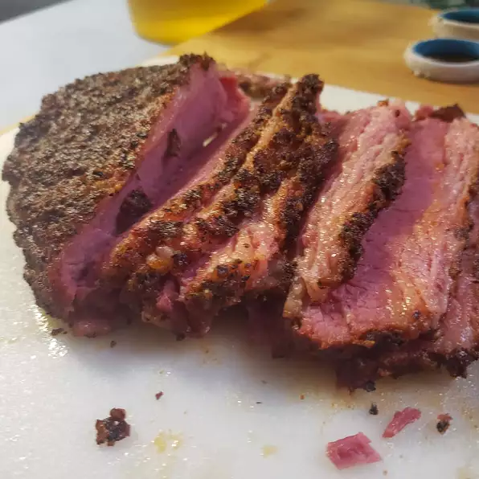

Pastrami

Description
Great pastrami is not the easiest thing to find west of the Catskills, so a few years ago I embarked
on a mission to find a way to turn the common corned beef into something similar. My goal was to come
up with a reasonable substitute that could be done in less than a day at home, without a smoker, or any
other special equipment. Impossible? No!
Recipe by Chef John off of allrecipes.com
Ingredients
- 2 cloves garlic, crushed
- 1/2 cup vegetable oil
- 1/4 cup coarsely ground fresh black pepper
- 2 tablespoons smoked paprika
- 2 teaspoons ground coriander
- 1 teaspoon dry mustard
- 1/2 teaspoon ground white pepper
- 1/4 teaspoon cayenne pepper
- 4 pounds corned beef brisket
Steps
- Mix garlic and vegetable oil in a small bowl. Set aside for 1 hour.
- Preheat oven to 225 degrees F (110 degrees C).
- Combine black pepper, paprika, coriander, dry mustard, white pepper, and cayenne pepper in a large bowl.
Set aside.
- Cover baking sheet with a large sheet of heavy-duty aluminum foil. Coat aluminum foil with prepared garlic oil.
Lay corned beef brisket on foil and brush with remaining garlic oil.
- Cover all sides of corned beef brisket completely with pepper mixture, reserving 1 to 2 tablespoons.
- With fat side of corned beef brisket up, wrap in the sheet of aluminum foil. Place wrapped corned beef on another
sheet of aluminum foil with the seam and fat side down. Place double-wrapped corned beef on a third sheet of
aluminum foil (seam down), and wrap again.
- Bake in the preheated oven for 6 hours.
- Remove pastrami from the oven and let cool to room temperature, about 3 hours.